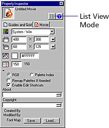
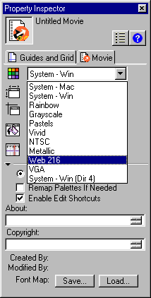

Using Director > Director 8 Tutorial > Set up the movie
Using Director > Director 8 Tutorial > Set up the movie |
Set up the movie
To begin your own version of GardenChat, you'll create a new movie and set the size of the Stage. You'll also select an appropriate color palette.
1 |
Choose File > New > Movie. |
2 |
If you've made changes to the Fun.dir movie, Director prompts you to save them. Choose Don't Save. |
Note that the default Stage is a different size than the Stage in the completed GardenChat movie. |
|
3 |
To change your Stage size, click the Movie tab of the Property Inspector. |
If the Property Inspector is not open, choose Window > Inspectors > Property. You should be in the default Graphical view, with the List View Mode icon deselected.
 |
|
4 |
To specify a new Stage size in pixels, enter 450 in the first Stage Size field (width) and 500 in the second Stage Size field (height). After entering data in a field, click either the Stage or Property Inspector and the Stage resizes. |
Because you are creating this movie for playback on the Web, you want to use a palette of Web-safe colors to ensure proper display. Director has a Web palette that you can select for your movie. |
|
5 |
On the Movie tab of the Property Inspector, click the Movie Palette pop-up menu and select Web 216.
 |
6 |
Choose File > Save. You can also press Control-S (Windows) or Command-S (Macintosh). |
7 |
Name the movie GardenChat1. |
8 |
Browse to the Learning folder within the Director application folder, and then open the My Tutorial folder; then save your movie. |
You must save your file in My Tutorial; other tutorial files will point to your file in this location. |
|
Note: As you complete the tutorial, remember to save your work frequently.